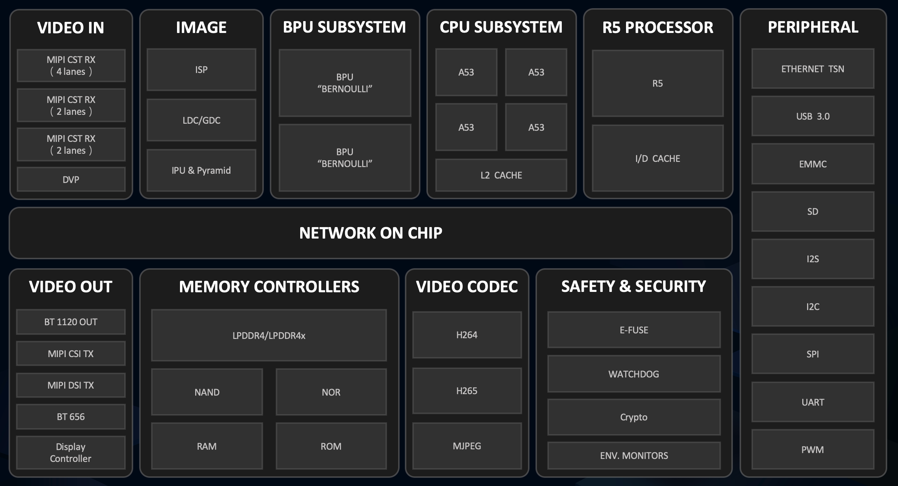

About Sunrise 3 (X3) AI Processor¶
Sunrise 3 (X3) is a low-power high-performance AIoT specific processor. X3 can be divided into X3M and X3E according to different user application scenarios.
X3 Features please refer to below block diagram:
{kind=link}
CPU Specifications: X3 SoC uses ARM® Cortex®-A53 as host controller chip, size of L1 Cache is 32KB, size of L2 Cache is 512KB. X3 SoC can support FPU & NEON accelerations, its Typical operating frequency is 1.2GHz and can support frequency control at software level. X3M has quad-core CPUs; while X3E has build-in dual-core CPUs.
BPU Specifications: Brain Processing Unit (BPU) is an AI accelerating IP core based on Horizon Robotics’ own-developed Bernoulli2 microarchitecture. Wherein, typical operating frequency of X3M’s dual-core BPUs is 1.2GHz, while typical operating frequency of X3E’s dual-core BPUs is 0.6GHz. Peak computes of the 2 can reach 5 TOPs and 3 TOPs respectively.
Tip
The flexible multi-core scheduling strategies of X3 SoCs’ build-in dual-core BPUs makes model scheduling at business level easier:
The single-frame single-core model scheduling strategy can manually dispatch a single inference to a single BPU core so as to implement the physical separation between those high-priority models who requires full image detection and some low-priority models in the detection + classification scenario.
While the single-frame dual-core model scheduling strategy can execute a single inference in 2 BPU cores in order to implement true dual-core execution. It can significantly reduce the latency of single inference.
The single-frame single-core model scheduling strategy can guarantee inference separation in 2 BPU cores when DDR etc. resources are not fully consumed. While the multi-threading multi-frame dual-core strategy can raise x2 FPS. The single-frame dual-core strategy can dramatically reduce the latency of a single inference of big model; however, the multi-threading multi-frame dual-core strategy may fail to implement x2 FPS due to the costs of dual-core scheduling.
More technical details about high-efficient dual-core usage please refer to AI Toolchain’s relevant documentation.
Video Channel Capacities: X3 AI processor comes with complete Video In, Video Out, Video CODEC (encoding/decoding) and Image Process etc. video channel modules, please refer to below framework diagram:
{kind=link}
Video In module accepts MIPI and DVP image sensor inputs. Wherein, MIPI Rx is divided into Rx0, Rx1/3 and Rx2, there are 8 lanes in total, design bandwidth of each lane can support sensor inputs e.g. 2Gbps, YUV422 8/10bit and Raw 8, 10, 12, 14.
SIF module retransmits from the virtual channel of Video In module to downstream ISP/IPU modules and can retransmit Video In data to third party SoC via bypass feature.
ISP module can support LSC/LDC/DIS/DPC/SNR etc., and can obtain high-quality images in wide dynamic or low-light scenarios. Meanwhile, it provides ISP Tuning tool for users to implement ISP tuning by themselves.
VPS hardware provides image processing capacities such as: resize, flip, rotation, correction, flow control and pyramid etc. In hardware, it is composed by single IPU, single pyramid (PYM) and 2 GDCs. In software, it implements time-sharing hardware multiplexing by grouping, and can support 8-group time-sharing multiplexing at maximum.
VENC/VDEC module can offer at maximum 8M@60fps H.265 and 8M@30fps H.264 encoding/decoding capacities. as well as 16M pixels JPEG encoding/decoding capacity.
Video Out module can support BT1120, BT656 and MIPI etc output scenarios.
Note
Video In module can support not only MIPI and DVP RAW type sensor inputs, it also can support USB sensor input. Typically, it obtains USB input images in JPEG etc. formats from USB driver, then decode images using the VDEC module and dumps YUV data to VPS module.
More information about basic video channel and USB camera usages please refer to basic APIs of system software, or simplify your usage using the VideoSource application development component.
More information about X3’s other peripherals and ports please refer to X3M/X3E Datasheets.